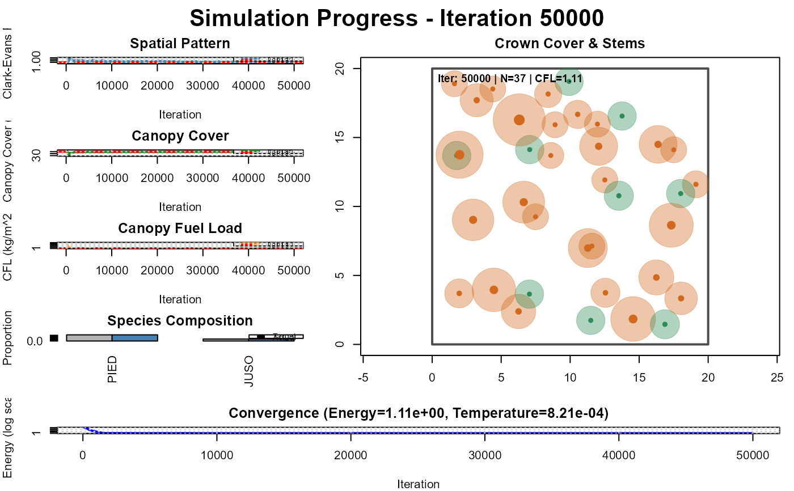

Create Pinyon-Juniper Configuration (Huffman et al. 2009)
Source:R/config_system.R
pj_huffman_2009.RdPre-configured simulation parameters for pinyon-juniper woodland based on Huffman et al. (2009) Control Treatment data from Fishlake National Forest, Utah.
Usage
pj_huffman_2009(
density_ha = 927,
canopy_cover = 0.4,
cfl = 1.1,
mean_dbh = 20.5,
max_iterations = 50000,
plot_interval = 1000,
enable_plotting = TRUE
)Arguments
- density_ha
Total tree density (trees/ha). Default: 927
- canopy_cover
Target canopy cover proportion (0-1). Default: 0.40
- cfl
Target canopy fuel load (kg/m^2). Default: 1.10
- mean_dbh
Target mean DBH (cm). Default: 20.5
- max_iterations
Maximum optimization iterations. Default: 10000
- plot_interval
Status update interval. Default: 1000
- enable_plotting
Show progress plots. Default: TRUE
Value
List with components:
- targets
Stand structure targets
- weights
Optimization weights
- simulation
Simulation control parameters
- allometric_params
Allometric equation parameters
References
Huffman, D.W., et al. (2009). Herbaceous vegetation control after thinning in southwestern ponderosa pine forests. Forest Ecology and Management.
Examples
# \donttest{
# Use default configuration
config <- pj_huffman_2009()
# Run simulation with extracted parameters
result <- simulate_stand(
targets = config$targets,
weights = config$weights,
plot_size = config$simulation$plot_size,
max_iterations = config$simulation$max_iterations,
cooling_rate = config$simulation$cooling_rate
)
#> Iter 1000: Energy=8.020444, CE=1.139, Cover=0.360, CFL=1.261, N=28, Temp=0.009512
#> Iter 2000: Energy=1.229243, CE=1.073, Cover=0.389, CFL=1.115, N=37, Temp=0.009048
#> Iter 3000: Energy=1.183036, CE=1.055, Cover=0.395, CFL=1.131, N=37, Temp=0.008607
#> Iter 4000: Energy=1.189777, CE=1.057, Cover=0.395, CFL=1.134, N=37, Temp=0.008187
#> Iter 5000: Energy=1.162369, CE=1.052, Cover=0.398, CFL=1.125, N=37, Temp=0.007788
#> Iter 6000: Energy=1.226788, CE=1.071, Cover=0.393, CFL=1.139, N=37, Temp=0.007408
#> Iter 7000: Energy=1.171435, CE=1.009, Cover=0.390, CFL=1.128, N=37, Temp=0.007047
#> Iter 8000: Energy=1.200002, CE=1.024, Cover=0.390, CFL=1.115, N=36, Temp=0.006703
#> Iter 9000: Energy=1.121273, CE=1.022, Cover=0.396, CFL=1.116, N=37, Temp=0.006376
#> Iter 10000: Energy=1.165276, CE=1.034, Cover=0.391, CFL=1.116, N=37, Temp=0.006065
#> Iter 11000: Energy=1.146431, CE=1.048, Cover=0.396, CFL=1.113, N=37, Temp=0.005769
#> Iter 12000: Energy=1.136774, CE=1.031, Cover=0.397, CFL=1.119, N=37, Temp=0.005488
#> Iter 13000: Energy=1.137079, CE=1.023, Cover=0.394, CFL=1.105, N=37, Temp=0.005220
#> Iter 14000: Energy=1.125845, CE=1.020, Cover=0.395, CFL=1.107, N=37, Temp=0.004966
#> Iter 15000: Energy=1.135127, CE=1.046, Cover=0.397, CFL=1.112, N=37, Temp=0.004724
#> Iter 16000: Energy=1.142624, CE=1.013, Cover=0.392, CFL=1.116, N=37, Temp=0.004493
#> Iter 17000: Energy=1.143007, CE=1.022, Cover=0.393, CFL=1.121, N=37, Temp=0.004274
#> Iter 18000: Energy=1.156409, CE=1.030, Cover=0.393, CFL=1.125, N=37, Temp=0.004066
#> Iter 19000: Energy=1.130412, CE=1.023, Cover=0.395, CFL=1.114, N=37, Temp=0.003867
#> Iter 20000: Energy=1.136938, CE=1.014, Cover=0.394, CFL=1.119, N=37, Temp=0.003679
#> Iter 21000: Energy=1.150846, CE=1.060, Cover=0.399, CFL=1.100, N=37, Temp=0.003499
#> Iter 22000: Energy=1.128632, CE=1.034, Cover=0.397, CFL=1.115, N=37, Temp=0.003329
#> Iter 23000: Energy=1.130383, CE=1.015, Cover=0.394, CFL=1.115, N=37, Temp=0.003166
#> Iter 24000: Energy=1.118462, CE=1.024, Cover=0.398, CFL=1.116, N=37, Temp=0.003012
#> Iter 25000: Energy=1.118791, CE=1.021, Cover=0.397, CFL=1.112, N=37, Temp=0.002865
#> Iter 26000: Energy=1.111869, CE=1.003, Cover=0.397, CFL=1.115, N=37, Temp=0.002725
#> Iter 27000: Energy=1.109112, CE=1.011, Cover=0.398, CFL=1.101, N=37, Temp=0.002592
#> Iter 28000: Energy=1.134707, CE=1.024, Cover=0.395, CFL=1.123, N=37, Temp=0.002466
#> Iter 29000: Energy=1.123877, CE=1.019, Cover=0.395, CFL=1.117, N=37, Temp=0.002346
#> Iter 30000: Energy=1.107637, CE=1.008, Cover=0.399, CFL=1.113, N=37, Temp=0.002231
#> Iter 31000: Energy=1.126176, CE=1.017, Cover=0.396, CFL=1.116, N=37, Temp=0.002122
#> Iter 32000: Energy=1.121750, CE=0.998, Cover=0.395, CFL=1.112, N=37, Temp=0.002019
#> Iter 33000: Energy=1.113913, CE=0.997, Cover=0.396, CFL=1.109, N=37, Temp=0.001920
#> Iter 34000: Energy=1.120085, CE=1.004, Cover=0.396, CFL=1.108, N=37, Temp=0.001827
#> Iter 35000: Energy=1.123954, CE=1.023, Cover=0.396, CFL=1.105, N=37, Temp=0.001738
#> Iter 36000: Energy=1.113896, CE=1.003, Cover=0.396, CFL=1.106, N=37, Temp=0.001653
#> Iter 37000: Energy=1.117588, CE=1.007, Cover=0.396, CFL=1.113, N=37, Temp=0.001572
#> Iter 38000: Energy=1.109889, CE=1.000, Cover=0.398, CFL=1.112, N=37, Temp=0.001496
#> Iter 39000: Energy=1.115407, CE=1.012, Cover=0.396, CFL=1.111, N=37, Temp=0.001423
#> Iter 40000: Energy=1.116438, CE=1.002, Cover=0.396, CFL=1.116, N=37, Temp=0.001353
#> Iter 41000: Energy=1.112135, CE=1.008, Cover=0.398, CFL=1.114, N=37, Temp=0.001287
#> Iter 42000: Energy=1.106885, CE=1.006, Cover=0.399, CFL=1.110, N=37, Temp=0.001224
#> Iter 43000: Energy=1.108235, CE=1.002, Cover=0.398, CFL=1.110, N=37, Temp=0.001165
#> Iter 44000: Energy=1.108902, CE=1.001, Cover=0.397, CFL=1.109, N=37, Temp=0.001108
#> Iter 45000: Energy=1.106079, CE=1.001, Cover=0.398, CFL=1.109, N=37, Temp=0.001054
#> Iter 46000: Energy=1.105399, CE=1.010, Cover=0.398, CFL=1.107, N=37, Temp=0.001003
#> Iter 47000: Energy=1.107494, CE=1.016, Cover=0.399, CFL=1.111, N=37, Temp=0.000954
#> Iter 48000: Energy=1.104251, CE=0.998, Cover=0.398, CFL=1.107, N=37, Temp=0.000907
#> Iter 49000: Energy=1.104926, CE=1.001, Cover=0.398, CFL=1.107, N=37, Temp=0.000863
#> Iter 50000: Energy=1.105228, CE=1.019, Cover=0.401, CFL=1.108, N=37, Temp=0.000821

# }
if (FALSE) { # \dontrun{
# Modify specific parameters
config <- pj_huffman_2009(density_ha = 1000, cfl = 1.5)
# Access components
config$targets$density_ha
config$weights$canopy_cover
} # }